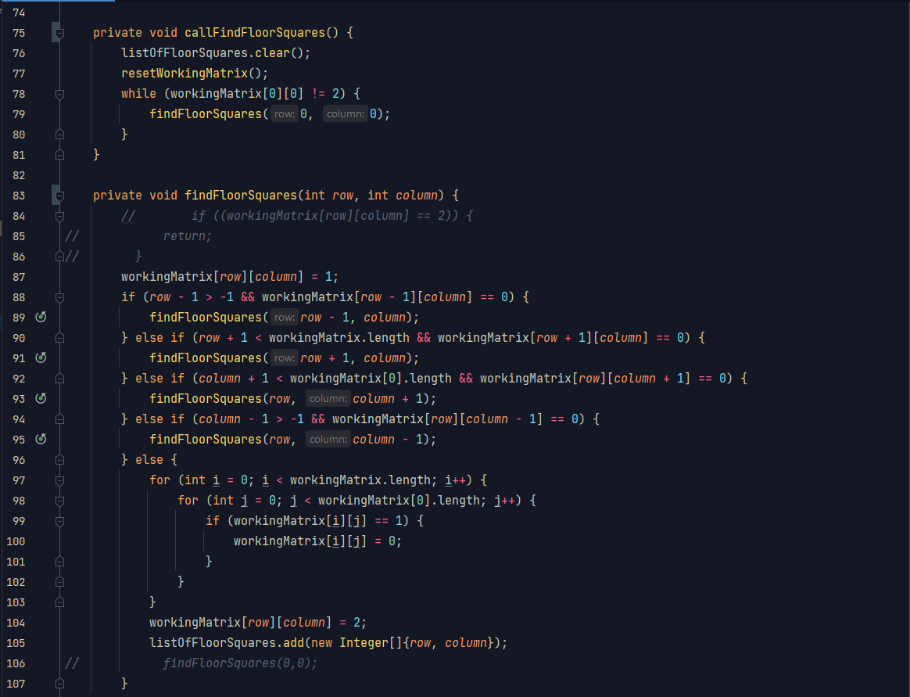
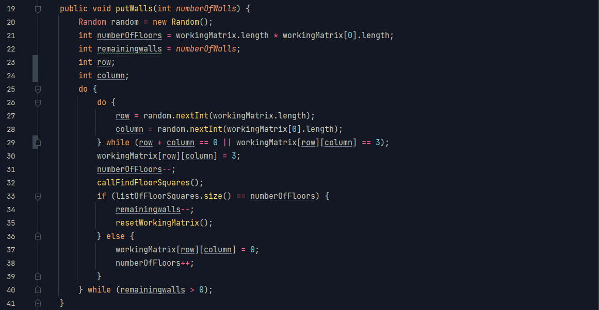

Véletlenszerű térképgenerálás
A cél egy olyan mátrix véletlenszerű generálása, ahol az összes nullából az összes elérhető.
- - -
Rekurzív algoritmus
Ay eredeti kód csak a findFloorSquares volt, a kommentezett sorokkal. Így azonban egy 11x11-es pálya már verem túlcsordulást okozott, lévén több ezerre nőtt a számuk. Ezért kettébontottam az eljárást, így már egy 50x50-es pályával is elboldogul.
A rekurzív eljárást használó kód
Lerakunk egy falat, és a bal felső sarokból indulva megnézzük, hogy a rekurzív eljárásunk segítségével hány mezőt érünk el. Ha ez annyi, amennyit a mátrix mérete és a falak száma alapján várhatunk, akkor lerakhatjuk a következő falat. Ha kevesebb mezőt érünk el, azt jelenti, hogy elzártunk bizonyos mezőket. Ilyenkor a falat visszavesszük, és egy új véletelen pozícióval próbálkozunk.
